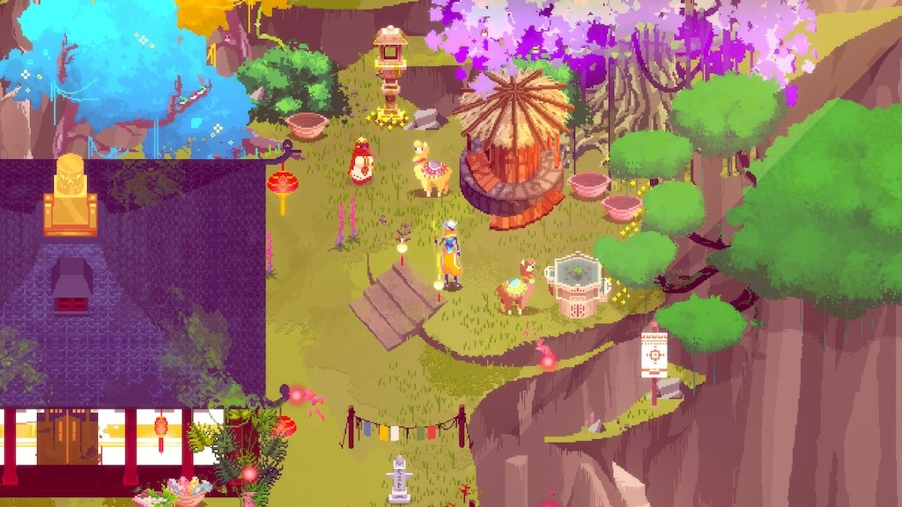

Quest #2
It is in the afternoon and the town seemed lively, you head up town to see more of the area and you stumble upon an elderly woman, dark skinned and has silver hair. “Good afternoon young one” she greets’ and you greet her as well. “I see you’re new, I am the one in charge of this town and I welcome you” she notices the clothes you are wearing “Ah I see you’re an adventurer, and a novice, I have behind me are the famous leaves of alima, purple leaves that help in healing, I’m willing to offer you some but you have to answer this simple riddle “At night they come without being called, by day they disappear without being noticed, what are they?”
